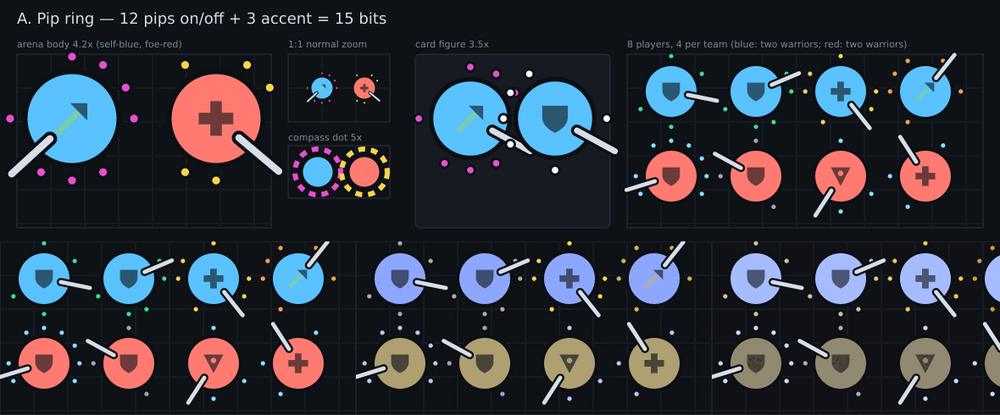
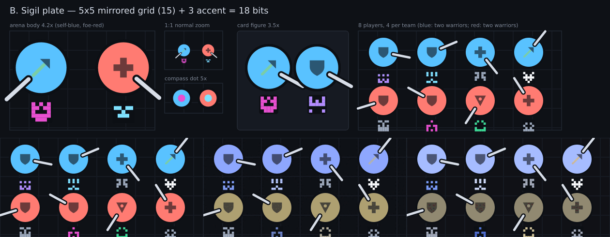
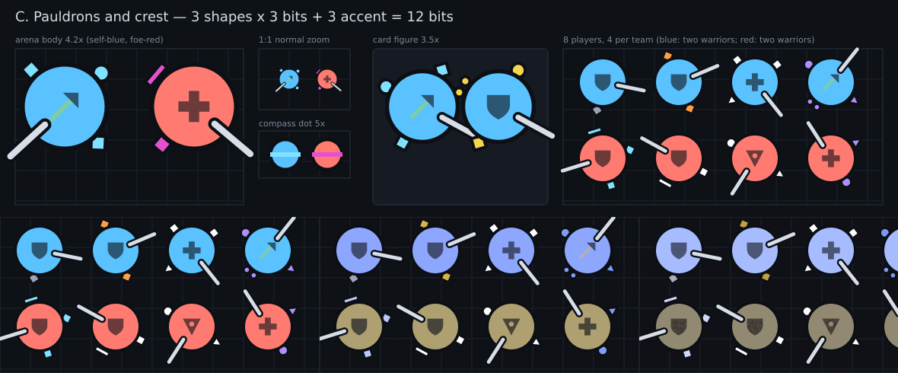
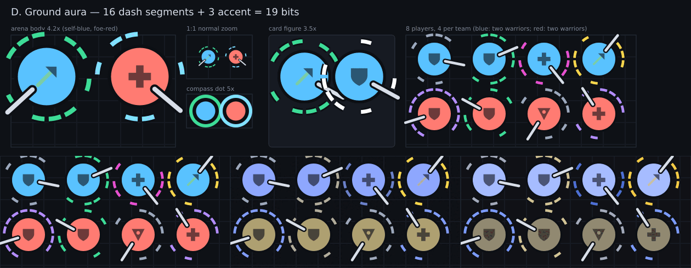
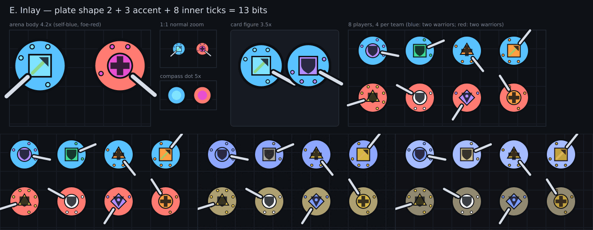
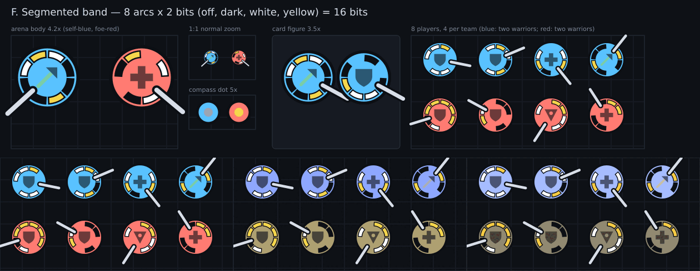
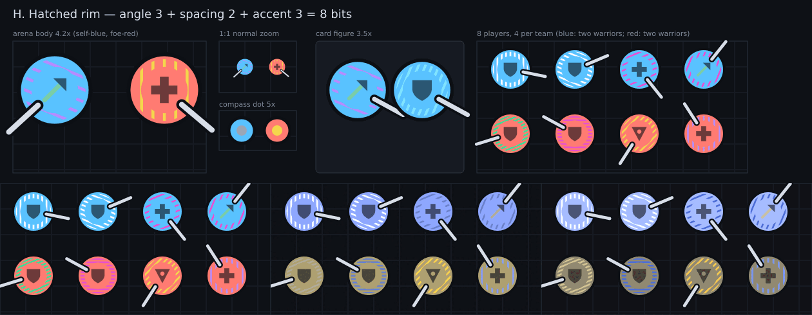
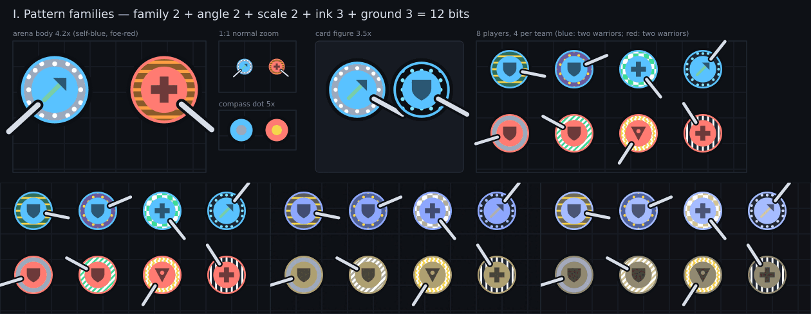
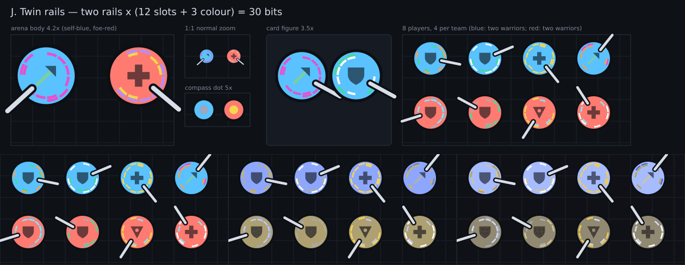
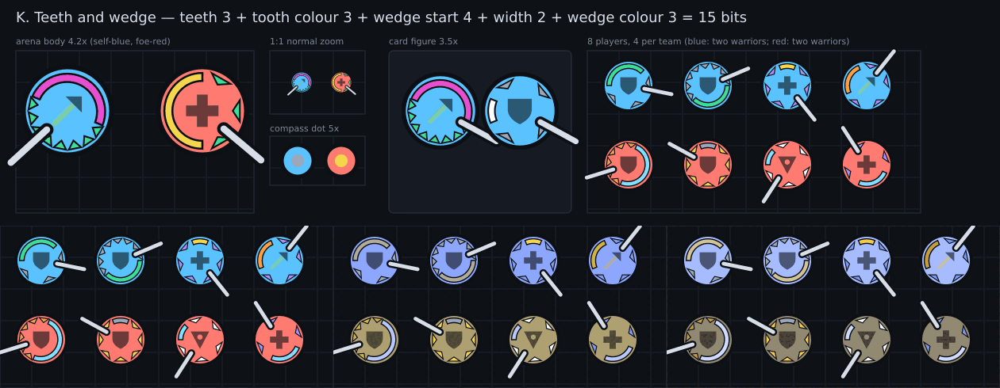

Study, not decided. Generated by scripts/assets/identity-mockups.mjs. Each sheet: arena body at 4.2x and 1:1, compass dot, card figure, 8 players (blue: two warriors; red: two warriors, the hard case), then the 8 players through normal, deuteranopia and protanopia (left to right, bottom strip). Accent palette (8 colours, no blue, no red): yellow, white, violet, mint, orange, slate, magenta, ice.
Operator constraint (after round 1): the mark must live inside the player circle, and the profession symbol must stay untouched. Only E fit. A to D draw outside the disc and are kept for reference. F to H below use only the ring between the glyph and the rim (radius 8.6 to 11.4 of 14, a 2.8 px band) and sit on a flat team disc, so the glyph reads as on a bare body.

Twelve dots round the rim, on or off, in one accent. Bits: 12 + 3 = 15. Map size: dots are 3 px, readable as "dotted halo", the exact pattern only up close; compass shows the accent as a dashed ring. Colour-blind: the pattern survives, the accent colour partly (violet/magenta merge). Clash: stays outside the team disc, but crowds the weapon mark and the cape band. Cost: up to 12 small circles per body.

A 5x5 mirrored block under the feet (an identicon), one accent. Bits: 15 + 3 = 18, the most distinct looks. Map size: best on the card and when you look at someone; at 1:1 it is a 9 px blot you can tell apart from a neighbour but not read, and the compass only gets the accent. Colour-blind: shape carries it, safest. Clash: none with team or profession (outside the disc); sits where the nameplate does not. Cost: up to 15 rects.

Three small shapes: left shoulder, right shoulder, back (8 shapes each), one accent. Bits: 9 + 3 = 12 (512 shape combos). Map size: reads as silhouette, which is how GW1 told players apart; pairs of same-class players differ at a glance when shapes differ. Colour-blind: shape first. Clash: the back mark sits where the cape hangs (#1406): they would need a rule, cape wins. Cost: three paths.

A broken ring round the body, 16 segments on or off, one accent. Bits: 16 + 3 = 19. Map size: the strongest recognisable shape at a distance (a dashed ring), but it looks like a skill ring or the target ring (r+9), so it competes with the threat language. Colour-blind: pattern survives. Cost: up to 16 arcs, two strokes each.

A small coloured plate (circle, square, diamond or triangle) behind the profession glyph, plus eight inner ticks. Bits: 2 + 3 + 8 = 13. Map size: the plate is the loudest accent and the glyph stays dark on it, but it fights the profession glyph, the thing a glance must read first. Compass: accent core. Colour-blind: plate shape plus tick pattern survive. Cost: one shape and up to 8 dots.

Eight arcs in the rim band, each off, dark, white or yellow (2 bits): 16 bits, 65k states. Map size: reads as a clock-like ring; with 8 arcs the pattern is clear at 2.4x and a blur at 1:1 (arcs are 3 px wide), so at 1:1 it tells players apart by overall light/dark balance only. Colour-blind: lightness carries it (white, dark, yellow differ in luminance), good. Clash: a bright ring can read as a status ring; keeping white/yellow off the team hues avoids team confusion. Cost: up to 8 paths. Compass: the dot gets an accent core, nothing more.
Three dots parked on the band, each at one of 16 clock slots and in one of 4 colours (white, yellow, violet, dark): 18 bits. Map size: the quietest, so the glyph stays clearest; dots are 4 px, you see 'two white dots on the left, yellow top' at 2.4x and a speck at 1:1. Colour-blind: lightness and position, good; violet is the weak colour. Clash: dots can read as a weapon or off-hand mark if one lands near the facing. Cost: three circles.

The band filled with hatching: one of 8 angles, 4 densities, 8 accent colours: 8 bits only (256 looks). Map size: the loudest texture, readable as 'striped rim' even at 1:1 but only 8 bits; same-class partners differ by angle and colour. Colour-blind: angle and density survive, colour does not; risk of moire on small screens. Clash: stripes shimmer next to the glyph. Cost: a clipped group of up to 20 lines per body, the dearest of the three.

Round 3, after the operator liked H's rim band but wanted more than stripes. The band holds one of four patterns (stripes, dots, chevrons, checker) at one of four angles and scales, in an ink colour on one of eight ground colours: 12 bits, 4096 looks, and they differ in kind, not only in angle. Map size: the family is readable at 2.4x (dots vs bars vs checker); at 1:1 it is texture and ground colour. Colour-blind: pattern and ground lightness carry it. Clash: busiest of the set, a bright ground can read as a status ring. Cost: up to ~100 small shapes inside a clip: the dearest, would be baked to a sprite per key.

Two thin concentric rails, each broken into 12 slots (on or off) with its own colour: 30 bits, almost the whole key. A dash-code look, like morse. Map size: the quietest; the rails are 1 px, so it works on the card and in the Team Lobby, and at 1:1 it is a faint coloured halo. Colour-blind: slot pattern survives, colours less. Clash: none, it is the most discreet. Cost: up to 24 short arcs.

A wedge of one colour covers a quarter to half of the band, and a number of inward teeth (3 to 10) in another colour fill the rest: 15 bits. Map size: the strongest silhouette in the rim family, since the wedge reads as a 'bite' whose position is the first thing you see, at 1:1 too; the teeth count is for the card. Colour-blind: wedge position and size and tooth count carry it. Clash: a wedge can read as a cooldown or progress arc; keep it off the cast bar's colours. Cost: one path and up to 10 triangles.
| Bits | Map-size read | CVD | Clash | |
|---|---|---|---|---|
| A pips | 15 | halo, pattern up close | ok | weapon, cape band |
| B sigil | 18 | accent only | best | none |
| C shoulders | 12 | silhouette | good | cape (back) |
| D aura | 19 | best distance | ok | skill rings, target ring |
| E inlay | 13 | loud | good | profession glyph |
| F band | 16 | ring balance | good | status rings |
| G satellites | 18 | specks, glyph clearest | good | weapon marks |
| H hatch | 8 | loud texture | colour weak | glyph shimmer |
| I patterns | 12 | texture + ground | good | busiest, status rings |
| J rails | 30 | faint halo | ok | none |
| K teeth and wedge | 15 | strongest rim silhouette | good | progress arcs |
Recommendation: C for the map (silhouette), B on the card and Team Lobby (all bits legible), sharing one accent colour. Needs fewer than 32 bits: C+B use 12 + 18 with the 3 accent bits shared, 27.